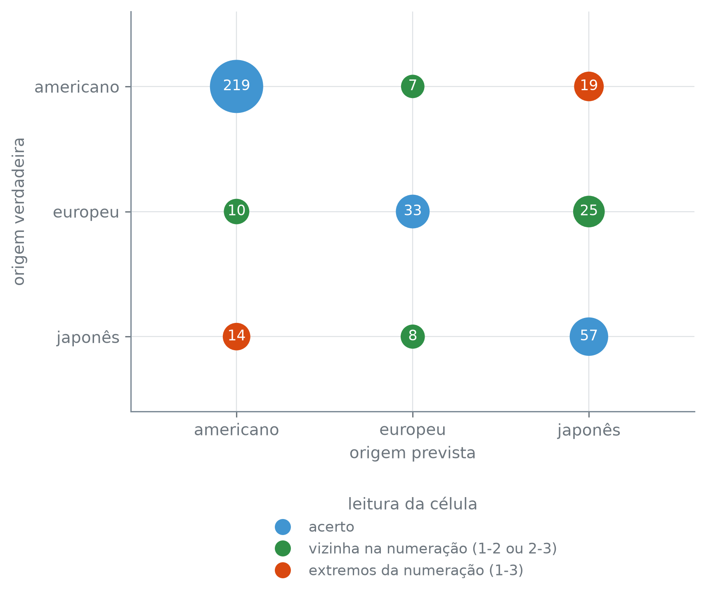

Esta seção corresponde à seção 4.3.5 de James et al. (2023).
A seção anterior ajustou uma curva logística para um alvo de duas classes, inadimplente ou não. origem, em Auto, tem três — americano, europeu e japonês —, e a curva em S da seção 9.2 não responde a uma pergunta de três respostas: ela devolve a probabilidade de uma classe contra a outra, e aqui sobra sempre uma terceira sem lugar nessa conta. É essa extensão, de duas classes para \(K\), que a logística multinomial resolve.
A base, de novo
A saída é a mesma da seção 8.4: escolhe-se uma classe para servir de referência — a base —, e cada uma das outras ganha o seu próprio conjunto de coeficientes, lidos contra essa base. Com \(K\) classes e uma base fixada, restam \(K - 1\) conjuntos de coeficientes; para um preditor \(X = (x_1, \ldots, x_p)\), a probabilidade de uma classe \(k\) diferente da base, e da própria base, ficam
Com \(K\) categorias sem ordem natural, escolhe-se uma como base; as \(K - 1\) restantes ganham coeficientes próprios, lidos como log-chance contra essa base — o mesmo gesto da seção 8.4, em que drop_first descartava uma categoria e as indicadoras liam-se contra ela.
O scikit-learn, porém, não ajusta esse formato. Ele usa uma parametrização diferente, chamada softmax, que trata as \(K\) classes de forma simétrica — nenhuma vira base, e todas ganham o próprio conjunto de coeficientes:
\[
\Pr(Y = k \mid X = x) = \frac{e^{\beta_{k0} + \beta_{k1} x_1 + \cdots + \beta_{kp} x_p}}{\sum_{l=1}^{K} e^{\beta_{l0} + \beta_{l1} x_1 + \cdots + \beta_{lp} x_p}}, \qquad k = 1, \ldots, K.
\]
Essa forma tem \(K\) conjuntos de coeficientes, não \(K - 1\): é sobreparametrizada, porque somar a mesma constante a \(\beta_{k0}, \beta_{k1}, \ldots, \beta_{kp}\) em toda classe \(k\) não muda probabilidade nenhuma — a constante aparece em todo expoente do numerador e do denominador, e cancela na divisão. É essa sobra que a parametrização com base elimina, zerando de propósito a linha da classe escolhida; a softmax simplesmente deixa a sobra aí, espalhada pelas \(K\) linhas. As duas formas dizem a mesma coisa, e o resto da seção mostra isso com o Auto.
dados/Auto.csv tem 397 carros. potencia chega como texto, porque cinco linhas trazem ? em vez de um número; pd.to_numeric(auto["potencia"], errors="coerce") converte a coluna para número e transforma esses cinco ? em ausente, e dropna() descarta as cinco linhas ausentes — sobram 392.
Das 392 linhas restantes, 245 são americanos (origem 1), 68 são europeus (origem 2) e 79 são japoneses (origem 3). 245 dos 392 carros — 62,5% do conjunto (245/392) — vêm dos Estados Unidos; as outras duas origens dividem o resto. Cinco preditores técnicos — cilindrada, potencia, peso, aceleracao e ano — tentam prever qual das três é a origem de cada carro.
O ajuste, com o mesmo C=np.inf e max_iter=10000 da seção 9.2, converge em 4.739 iterações; capturando todo aviso emitido durante o fit, n_avisos sai 0 — nenhum aviso de convergência, nem de nenhum outro tipo. Sobre as mesmas 392 linhas que o treinaram, o modelo acerta 0,7883 das previsões; não é desempenho em dado novo, só a fração de acerto sobre o dado que ele já viu — julgar um classificador em dado que ele não viu é assunto do capítulo 10.
coef_ vem com três linhas, não duas: classes_ dá 1, 2 e 3, a mesma codificação de origem, e cada linha traz um coeficiente por coluna de feature_names_in_. Nenhuma das três é a base — é a parametrização softmax descrita acima, simétrica, que o scikit-learn ajusta por padrão sempre que o alvo tem mais de duas classes.
Subtrair a linha da origem 1 de toda linha de coef_ — e o mesmo em intercept_ — produz exatamente a forma com base descrita no começo desta seção: a linha da origem 1 zera por completo, e as outras duas passam a ler-se contra ela. É de novo o gesto do drop_first da seção 8.4, agora sobre três classes em vez de duas categorias, e sem reajustar modelo nenhum — a tabela acima só reorganiza os mesmos coeficientes que ajuste-multinomial já tinha produzido.
Recalculando a probabilidade à mão a partir desses logitos recentrados — a exponencial de cada logito dividida pela soma da linha, a própria definição de softmax — e comparando com o predict_proba do ajuste original: a diferença máxima, sobre as 392 × 3 entradas, é 1,11e-15, e probabilidades_batem sai True. A previsão — a classe de maior probabilidade em cada linha — também bate: previsoes_batem sai True. Os coeficientes mudam de número; o que o modelo prevê para cada um dos 392 carros, não.
Três classes não são uma escala
A seção 9.1 mostrou esse problema do lado da codificação: rotular derrame, overdose e convulsão como 1, 2 e 3 inventa uma ordem e uma distância que a lista de diagnósticos não tinha. A matriz de confusão — a tabela que cruza a classe verdadeira com a classe prevista, uma célula por par — do ajuste sobre Auto mostra o mesmo problema do lado do erro.
confusion_matrix(y, y_previsto) do scikit-learn devolve linha = origem verdadeira, coluna = origem prevista — por isso a tabela acima, e a figura a seguir, rotulam os dois eixos em vez de deixar por conta da memória.
Contagem crua, porém, não controla pelo tamanho de cada origem — 245, 68 e 79 carros, a contagem por origem impressa acima —, e um par que reúne mais carros tem mais chance de acumular erro só por isso.
rotulos = ["americano", "europeu", "japonês"]grupos = {"acerto": ([], [], [], "C0"),"vizinha na numeração (1-2 ou 2-3)": ([], [], [], "C2"),"extremos da numeração (1-3)": ([], [], [], "C1"),}for i inrange(3):for j inrange(3): contagem =int(matriz[i, j])if i == j: chave ="acerto"elifabs(i - j) ==1: chave ="vizinha na numeração (1-2 ou 2-3)"else: chave ="extremos da numeração (1-3)" grupos[chave][0].append(j) grupos[chave][1].append(i) grupos[chave][2].append(contagem)fig, ax = plt.subplots(figsize=(6.2, 5.4))for rotulo_legenda, (xs, ys, contagens, cor) in grupos.items(): tamanhos = [70* np.sqrt(c) for c in contagens] ax.scatter(xs, ys, s=tamanhos, color=cor, zorder=3)for x_pos, y_pos, c inzip(xs, ys, contagens): ax.annotate(str(c), xy=(x_pos, y_pos), ha="center", va="center", fontsize=9, color="white", zorder=4)ax.set_xticks([0, 1, 2])ax.set_xticklabels(rotulos)ax.set_yticks([0, 1, 2])ax.set_yticklabels(rotulos)ax.set_xlabel("origem prevista")ax.set_ylabel("origem verdadeira")ax.set_xlim(-0.6, 2.6)ax.set_ylim(2.6, -0.6)marcadores_legenda = [ Line2D([], [], marker="o", linestyle="None", color=cor, markersize=9)for _, _, _, cor in grupos.values()]ax.legend( marcadores_legenda, list(grupos.keys()), title="leitura da célula", loc="upper center", bbox_to_anchor=(0.5, -0.18),)plt.tight_layout()plt.show()

Figura 53.1: Matriz de confusão do ajuste sobre as 392 linhas de Auto, como bolhas: a área de cada bolha cresce com a raiz quadrada da contagem da célula (maior para célula mais frequente, sem ser proporcional a ela), e o número exato está escrito dentro dela. Azul marca acerto (a diagonal); verde marca erro entre origens vizinhas na numeração (1-2 ou 2-3); laranja marca erro entre os dois extremos da numeração (1-3). Eixo vertical: origem verdadeira; eixo horizontal: origem prevista.
Se origem fosse mesmo uma escala — 1, depois 2, depois 3 —, o par de extremos (1-3) devia ser o mais raro de confundir, não um dos mais comuns. A contagem crua já aponta nessa direção: entre americano e japonês (1-3) o modelo erra 33 vezes (19 + 14), mais que entre americano e europeu (1-2), 17 vezes (7 + 10) — longe_supera_1_2 sai True. Mas as três origens têm tamanhos bem diferentes (245, 68 e 79 carros), e um par que reúne mais carros acumula mais chance de erro só por isso, sem que a numeração tenha nada a ver. Dividindo o erro de cada par pelo total de carros que ele reúne — a taxa de confusão do par —, o quadro muda de escala mas não de conclusão: o par vizinho 1-2 erra em 5,43% dos casos, o par vizinho 2-3 em 22,45%, e o par de extremos, 1-3, em 10,19% — acima da taxa do par vizinho 1-2 (longe_supera_1_2_em_taxa sai True). O par mais distante na numeração de origem não é o mais fácil de separar: a numeração não é a régua que o erro segue.
James, Gareth, Daniela Witten, Trevor Hastie, Robert Tibshirani, e Jonathan Taylor. 2023. An Introduction to Statistical Learning with Applications in Python. Springer.